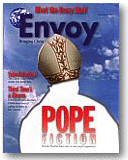
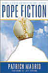

VICARIUS FILII DEI and 666
Response to a Challenge by Patrick Madrid of Envoy Magazine.
The Challenge
The following is an excerpt from Envoy Magazine's Volume
2.2 March/April 98 cover article,
Pope Fiction, by Patrick Madrid. The
highlighted text
is of special interest, and the core of the subsequent discussion.
(NOTE: Javascript must be enabled on your browser to
see the highlighting).
Fiction 5
The pope is the beast spoken of in Revelation 13.
Verse 1 says that he wears crowns and has "blasphemous names" written
on his head. Verse 18 says that the numerical value of his name adds up
to 666. The pope's official title in Latin is Vicarius Filii Dei (Vicar
Son of God). If you add that up using Roman numerals, you get 666. The
pope's tiara is emblazoned with this title, formed by diamonds and
other jewels.boxes
I wasn't very good at math in school, but
even I can follow this argument and run the numbers well enough to show
it's bogus. (Besides, answering this question is apologetics at its
most fun!) The charge that the pope is the beast of Revelation 13,
because his title adds up to 666, is especially popular with
Seventh-Day Adventists, but it's also widely repeated in some
Protestant circles.
Vicarius Filii Dei does have the mathematical
value of 666 in Latin. Here's how it works. Like many ancient
languages, such as Greek and Hebrew, some Latin letters are also used
for numbers: I = 1, V = 5, X = 10, L = 50, C = 100, D = 500 and M =
1000. The letter "u" is rendered as V and the letter "w," which doesn't
exist in the Latin alphabet, would be rendered as VV. So this title
would read in Latin as VICARIVS FILII DEI.
When calculating the value of a name or word,
letters that don't have a numerical value are ignored. For example,
drop out the no-value letters in my name, PATRICK MADRID, and you come
up with 2102 — 1 (i) + 100 (c) + 1000 (m) + 500 (d) + 1 (i) + 500 (d) =
2102. By the way, this is one reason why, as far as I know, no one has
yet accused me of being in league with the anti-Christ. The numbers
just don't add up.
But in the case of VICARIVS FILII DEI, they
do add up to 666. Isolate the numbers and this is what you get: 5 (v) +
1 (i) + 100 (c) + 1 (i) + 5 (V) + 1 (i) + 50 (L) + 1 (i) + 1 (i) + 500
(d) + 1 (i) = 666.
But there are problems with this. The first
is that Vicarius
Filii Dei, or "Vicar of the Son of God," is not now, nor has it ever
been, a title of the bishop of Rome. The second problem is that
virtually no one, including many unsuspecting lay Catholics, knows that
this papal
"title" is a fabrication. To an untrained ear, it sounds enough
like one of the pope's real titles, Vicarius Christi (Vicar of Christ),
to pass the test. Unfortunately for those who traffic in this
particular piece of pope fiction, the real title, Vicarius Christi,
adds up to only a measly 214, not the infernal 666. In fact, none of
the pope's official titles, such as Servus Servorum Dei (Servant of the
Servants of God), Pontifex Maximus (Supreme Pontiff), or Successor
Petri (Successor of Peter), will add up to 666. That's why you never
see any of them used by anti-Catholics.
If the person making this
claim disputes these facts, ask him to furnish even one example of a
papal decree, ecclesiastical letter, conciliar statement, or any other
official Catholic document in which the pope calls himself or is
referred to as the "Vicar of the Son of God." He won't be able to find
one, because none exist. Vicarius Filii Dei has never been a title of
the pope.
|
MAY 1, 2009: An official
ecclesiastical letter of Pope Leo IX that uses Vicarius Filii Dei
has been found!
JUNE 25, 2009: Two official Apostolic
Constitutions of Pope Paul VI that use Vicarius Filii Dei
discovered!
See VICARIUS FILII
DEI 666.
|
Poof! That part was easy, but some people,
especially Seventh-Day
Adventists, will ignore the evidence (or lack of it) and hold
tenaciously to the notion that "Vicar of the Son of God" is an official
papal title and therefore identifies the pope as the Beast of
Revelation. What else can be said in response?
Using the same math exercise we did above,
point out that the name of the woman who started the Seventh-Day
Adventist church, Ellen Gould White, also adds up to 666 in Latin. (L +
L + V +D + V + V + I = 666). Then ask if this proves that she is the
Beast. I can assure you the answer won't be "yes." If the answer is
"no," ask how this numbers game could possibly prove the pope or anyone
else is the Beast. If you're answered with silence, it's a good bet
that you've made some progress with the person.
The main fact to impress
on someone who uses this argument is that a papal title had to be
invented, one that could produce the magic number, in order to give
this argument legs.
But we're not quite finished cutting it off
at the knees. The charge that the pope is the Beast because he wears a
crown, and Revelation 13:1 says the Beast wears crowns and has
"blasphemous names" written on his head, must also be answered. This we
can do more quickly.
Since about the year 708, many popes have
worn at non-liturgical ceremonial events a special papal crown called a
tiara, but the stylized beehive-shaped papal crown of three diadems
that we have come to know as a tiara emerged only in the early 14th
century. Although it was customary for tiaras to be encrusted with
jewels and precious ornaments, there is no evidence — no statue, bust,
painting, drawing or even written description of any of the many tiaras
that were crafted — that any papal tiara ever had the name or title of
a pope emblazoned on it.
| Wrong. An inscribed
tiara of Pius IX was recently displayed in museum tours. See this page. |
This is significant, because there have been
medieval and Renaissance popes whose extravagant vanity prodded them to
have lavishly ornamented, jewel-encrusted tiaras made for themselves.
And we possess paintings and statues and other representations of them
produced during their lifetimes that show these tiaras (we even possess
some of the actual tiaras). If any popes in history would have been
tempted to succumb to the bad taste of spelling out "Vicarius Filii
Dei" in diamonds across the front of their tiaras, these men would have
— but they didn't. No pope did. One particular anti-Catholic tract I've
seen shows a plain metal tiara with Vicarius Filii Dei written in
diamonds across it. But it was a drawing — not a photograph of a museum
piece or even a photo of a painting of a tiara.
It had to be drawn, of course, because the
"666 papal crown"— as with all the other pope fictions—has only ever
existed in the minds of those who perpetuate this fantasy.
|
Challenge Accepted
The following was sent to Patrick Madrid via the Envoy Magazine
web page email address at
envoymag@juno.com
23 September 98
An open letter to Mr. Patrick Madrid and
Envoy Magazine,
In your cover story
Pope Fiction, in the March/April 1998
issue, you make
the following statement under Fiction 5:
| "If the person making this claim disputes these
facts, ask him to furnish even one example of a papal decree,
ecclesiastical letter, conciliar statement, or any other official
Catholic document in which the pope calls himself or is referred to as
the 'Vicar of the Son of God.' He won't be able to find one, because
none exist. Vicarius Filii Dei has never been a title of the pope." |
I accept your challenge. I would like
to offer my article at
http://www.aloha.net/~mikesch/666.htm in response. I personally
have Lucius Ferraris' Prompta Bibliotheca, 1858 Paris edition, a
Catholic theological encyclopedia, in which the title VICARIUS FILII
DEI appears in volume 5, column 1828, under "PAPA" (Pope), "Article
II." I have scanned the item and it appears in my article. Prompta
Bibliotheca, according to the 1913 Catholic Encyclopedia, is "a
veritable encyclopedia of religious knowledge" and "will ever remain a
precious mine of information" and is quoted frequently as an
authoritative Catholic source.
Vicarius Filii Dei also appeared repeatedly
in Catholic canon law for hundreds of years (Anselm's, Cardinal
Deusdedit's, and Gratian's Decretum also known as Concordia
Discordantium Canonum), in quotes of the Donation of Constantine which
contained the title and was considered authentic by the Church for many
hundreds of years, having been cited by as many as 10 Popes as proof of
their temporal authority. One 1879 edition of Corpus Juris Canonici
containing VICARIUS FILII DEI is presented in my article.
In "Crossing The Threshold of Hope", by Pope
John Paul II: First Chapter: "The Pope": A Scandal and a Mystery, page
3, you will find:
"The Pope is considered the man on earth
who represents the Son of God, who "takes the place" of the Second
Person of the omnipotent God of the Trinity".
If you directly translate "represents the Son
of God" into Latin, the official language of the Church, you get
"Vicarius Filii Dei".
In my article I present the above and other
evidence to show conclusively that VICARIUS FILII DEI is not a fraud,
and that it was indeed used by the Catholic Church for well over 600
years. In fairness, I have included a link to your article from mine so
that my readers can see a Catholic viewpoint on the matter. If you are
so sure that VICARIUS FILII DEI is a fabrication, then I challenge you,
in reciprocal fairness, to include a link to my article from yours to
show the historical evidence to your readership.
(I have posted this email to you on my
initial web index page and will be happy to append any response of
yours to it.)
Respectfully,
Michael Scheifler
|
The following reply was received on 26 September 98:
26 September 98
Mr. Scheifler,
Thank you for your letter to the editor. It
will be printed and answered by me in the pages of Envoy within the
next two issues. The arguments you raise regarding the alleged official
papal title, "vicarius filii dei," have been around a long time, much
longer than your Web site has, especially among Seventh Day Adventists.
Which prompts me to inquire if you yourself
are a Seventh Day Adventist. If not, what Protestant denomination do
you belong to?
Patrick Madrid
|
This reply was sent on 27 September 98:
27 September 98
Mr. Madrid,
I am indeed SDA, and wish to dispel the
notion that Adventists ignore "the evidence" as you claim. You may
still claim that it is not today, or ever was an officially recognized
papal title, but since the association with 666 apparently first
surfaced in 1612, it is no real surprise that Catholics are ignorant of
the facts on this matter today, or that the title is denied by Catholic
apologists.
The lack of official recognition today,
however, does not in any way prove that Vicarius Filii Dei is a fantasy
or fabrication concocted by Protestantism. The documented evidence I
present shows beyond any doubt that Vicarius Filii Dei is not, as your
article suggests, merely a groundless anti-Catholic invention. On the
contrary, it has a very long history of use by the Catholic Church,
having appeared in print in Catholic Canon Law, a respected Catholic
encyclopedia, and Catholic newspapers. Those are the hard facts, which
the Adventists at least, choose not to ignore.
I look forward to your published response in
Envoy Magazine.
(This will be appended to my open letter to
you on my web page.)
Respectfully,
Michael Scheifler
|
Mr. Madrid's published response appears in the Sept/Oct 98 edition
of his Envoy Magazine, the text of which he emailed to me on 9 December
98 for posting here on my web page. It is presented below in its
entirety.
The numbers of
the "beast" and the men who flub them.
Do we need any more proof that apologetics is
fun? Well, here's more. When I wrote my article "Pope Fiction"
(March/April 1998), I knew it might rile some people, and it did.
Shortly after it appeared, I received a letter from a Mr. Allan Drisko.
He didn't care for my piece, especially my refutation of the 666
nonsense sometimes used against the papacy. He wrote:
"In regard to Mr. Madrid's zealous efforts to eradicate 'papal
fictions' from the cobwebs of our minds, I was not impressed. To begin
with, the attempt to locate an ecclesiastical colossus headed by the
papacy at Rome as demonstrated in the New Testament, is an exercise in
futility. We Protestants never cease to be amazed at your tireless
armchair theological gymnastics to persuade us in the opposite, though
not unreasonable direction. If the Lord Jesus Christ had intended to
establish the supreme authority of Peter perpetuated in a dynastic line
of popes who would enjoy absolute episcopal jurisdiction over the
entire world, all logic demands that He would have categorically and
intentionally informed his followers in no uncertain terms! But He did
not. Other sacred offices of the church are set forth in Holy Writ, yet
strange silence prevails with regard to that which is supposedly the
highest of them all! The silence of the inspired writers in omitting to
mention such a high office is equivalent to Napoleon's biographer
failing to use the title of emperor.
"Now Mr. Madrid takes great glee in
swinging the wrecking ball at those who would entertain the thought
that the pope fits the description of the beast in Revelation 13. May I
say that the allusions to Catholicism in the book of Revelation are
quite intriguing, and many have concluded what Mr. Madrid rejects, but
certainly not without reason. Besides, we are told that wisdom is
needed here: 'Let him that has understanding count the number. . . for
it is the number of a man; and his number is 666.' I noticed no attempt
whatsoever on the part of the author to display any understanding in
offering an alternative explanation. Hence it is obvious he is only
interested in bashing a popular Protestant position and is content to
congratulate himself for doing so. Mr. Madrid triumphantly concludes
that the title Vicarius Filii Dei is not now, nor has it ever
been, a title of the bishops of Rome, and insinuates that Protestants
are merely dumb bunnies pulling this 'rabbit' out of a hat.
Unfortunately, the author is not being entirely forthright with his
readers. He says, 'If the person making this claim dispute these facts,
let him produce. . . any official Catholic document in which the pope
calls himself or is referred to as, "Vicar of the Son of God" . . .
none exist.' Drum roll please.
"In the early collection of canon law,
the Decretum of Gratian, first published in 1148, we read,
(Latin) 'Beatus Petrus in terris vicarious Filii Dei videtur esse
consitutus.' Translated into English, it means, "Blessed Peter is
seen to have been constituted vicar of the Son of God on earth."
Furthermore, in the revised Corpus of Canon (sic), published
by order of Pope Gregory XIII, it was to be corrected by, 'the
plenitude of apostolic power,' so that it is, 'entirely freed from
faults.' Therein we find the same statement as above. And I go on, when
Lucius Ferraris wrote, Prompta Bibliotheca in 1755, he gave
under the article 'Papa,' the title, Vicarius Filii Dei, and
cited the revised canon law as his authority. When his work was revised
and published in Rome in 1890, the document and aforementioned title
were retained! Moreover, the Catholic Encyclopedia says his
work, 'will ever remain a precious mine of information' (1913, vol. 6,
p.48).
"In conclusion, a subscriber to Our
Sunday Visitor, a Catholic weekly periodical, wrote a letter to
the editor, wherein he asked, 'What are the letters supposed to be in
the pope's crown, and what do they signify, if anything?' The answer
given was, 'The letters inscribed on the pope's mitre are these:
Vicarius Filii Dei, which is Latin for, Vicar of the Son of God'
(April 18, 1915, Vol. 3, Number 51, p. 3)."
|
Some weeks later, Mr. Drisko sent me a
follow-up letter:
"I wrote to you a couple of months ago in regard to your inaccurate
article relating to papal fictions. I thought perhaps you might drop me
a line as to where it was I erred, or maybe print a response in your
letters section. . . neither of which you chose to do, and I quite
understand why. You were wrong and you would look like a fool."
|
Clearly, Mr. Drisko was expecting to pull out
the history books and have himself a wonderful time, but I'm going to
have to disappoint him. As I'll show in a moment, there's a lot less to
his argument than meets the eye. But first, I should point out that Mr.
Drisko was not completely on the level with me in his first e-mail.
He plagiarized a significant chunk of his
argument, word for word, from The Prophecies of Daniel and the
Revelation, a book written by a Seventh Day Adventist named Uriah
Smith. Evidently, he didn't think I'd be familiar with the book, and
thought he could get away with passing off Mr. Smith's work as his own.
Not long after receiving Mr. Drisko's
letters, I received an e-mail from Michael Scheifler, and Adventist
apologist and creator of the Bible Light Homepage. Note the
striking similarity between Mr. Scheifler's arguments, and those of Mr.
Drisko:
"In your cover story, 'Pope Fiction'" he writes, ". . .
you issue a challenge for the critics of Catholicism to furnish one
example of an official Catholic document in which the pope is referred
to as Vicarius Filii Dei. I accept your challenge.
"I personally have Lucius Ferraris' Prompta
Bibliotheca, 1858 Paris edition, a Catholic theological
encyclopedia, in which the title Vicarius Filii Dei appears
in volume 5, column 1828, under 'Papa,' article 2. I have scanned the
item and it appears in an article on my Bible Light web site.
Prompta Bibliotheca, according to the 1913 Catholic
Encyclopedia, is 'a veritable encyclopedia of religious
knowledge,' and 'will ever remain a precious mine of information' and
is quoted frequently as an authoritative Catholic source.
"Vicarius Filii Dei also
appeared repeatedly in Catholic canon law for hundreds of years
(Anselm's, Cardinal Deusdedit's, and Gratian's Decretum, also
known as Concordia Discordantium Canonum), in quotes of the
Donation of Constantine, which contained the title and was
considered authentic by the Church for many hundreds of years, having
been cited by as many as 10 popes as proof of their temporal authority.
One 1879 edition of Corpus Juris Canonici containing Vicarius
Filii Dei is presented in my article.
"In Crossing the Threshold of Hope,
by Pope John Paul II, in the first chapter, page 3, you will find that,
'The pope is considered the man on earth who represents the Son of God,
who "takes the place" of the Second Person of the omnipotent God of the
Trinity.' If you directly translate 'represents the Son of God' into
Latin, the official language of the Church, you get Vicarius Filii
Dei.
"I am a Seventh Day Adventist, and wish
to dispel the notion that Adventists ignore 'the evidence' as you
claim. You may still claim that it is not today, or ever was an
officially recognized papal title, but since the association with 666
apparently first surfaced in 1612, it is no real surprise that
Catholics are ignorant of the facts on this matter today, or that the
title is denied by Catholic apologists.
"The lack of official recognition
today, however, does not in any way prove that Vicarius Filii Dei
is a fantasy or fabrication concocted by Protestantism. The documented
evidence I present shows beyond any doubt that Vicarius Filii Dei
is not, as your article suggests, merely a groundless anti-Catholic
invention. On the contrary, it has a very long history of use by the
Catholic Church, having appeared in print in the Catholic Canon Law, a
respected Catholic encyclopedia and Catholic newspapers. Those are the
hard facts, which the Adventists, at least, choose not to ignore."
|
Hard facts? Mmmm, . . . no. I don't think so.
But I will say this much for Mr. Scheifler: He obviously thought about
this matter long and hard before coming up with the wrong answer. In
reality, the "hard facts" indicate that Mr. Scheifler also seems to
have plagiarized from the same book out of which Mr. Drisko took his
arguments. Perhaps Seventh Day Adventists have only a single
anti-Catholic source book to filch from. In any case, at least Mr.
Scheifler, unlike Mr. Drisko, had the good taste not to copy Uriah
Smith word for word. Even so, the remarkable similarity between his
"essay" and the corresponding section in Mr. Uriah Smith's book is
unmistakable — the kind of similarity that would get him into hot
water, perhaps even expelled, if he tried something like this in a
university setting.
But enough. With that unpleasantness aside,
I'll now respond to the arguments raised in these letters, most of
which (thanks to Mr. Drisko and Mr. Scheifler's, ahem. . . borrowing
from a common source) are shared by all three writers.
1. First, Mr. Drisko remarks about me that,
"[I]t is obvious he is only interested in bashing a popular Protestant
position and is content to congratulate himself for doing so." How
ironic! If anyone is
"bashing," isn't it the Seventh-Day Adventists? After all, they are the
ones who conjured up the bogus Vicarius Filii Dei canard in
the first place to attack the Catholic Church.*
My article responded to this charge. Mr. Drisko's equating this with
"bashing" is astonishing.
2. Mr. Drisko claims that if Jesus meant to
found the papacy, "all logic demands that He would have categorically
and intentionally informed his followers in no uncertain terms!" Very
well. Let's apply this same principle to the Trinity. If Jesus meant
for Christians to believe in the Trinity (the most fundamental tenet of
the Christian Faith), logic demands that he would have categorically
and intentionally informed his followers in no uncertain terms.
Perhaps Mr. Drisko could show us in Scripture where, "in no uncertain
terms," Jesus Christ teaches that God exists in three coequal,
co-eternal, consubstantial persons. Obviously, He nowhere does this.
The Trinity doctrine is certainly scriptural, but any systematic
biblical defense of it must be assembled from many verses. So, if even
as bedrock a doctrine as the Trinity is neither mentioned by name nor
categorically explained "in no uncertain terms" in Scripture, it's
inconsistent and incorrect to demand the same of the papacy.
Mr. Drisko also argues that "the attempt to
locate an ecclesiastical colossus headed by the papacy at Rome as
demonstrated in the New Testament, is an exercise in futility." Here I
agree with him, but not for the reason he might think.
He's right. We shouldn't (and don't) expect
to find the full-blown, developed papacy, colossal or otherwise, in the
New Testament. Why not? Because the New Testament shows us a picture of
the primitive Church, the Church as it was in its infancy, the Church
in "mustard seed" form. And Christ Himself promised that His Church,
"The Kingdom of God," is an organic entity, one that would grow and
develop until it became tree-like.
The mustard seed bears no resemblance
whatsoever to its mature form. Surely Mr. Drisko must recognize this
and its parallel with the Church (and the papacy). So while it would
indeed be futile to attempt to find a fully developed papacy in the
pages of the New Testament, it is equally futile for Mr. Drisko to
claim that this somehow undermines the Catholic position on the papacy.
It doesn't.
3. Both Mr. Drisko and Mr. Scheifler cite the
Decretum of Gratian and the Corpus of Canon Law
as evidence that Vicarius Filii Dei is contained in
"official" Catholic documents. What Mr. Drisko doesn't seem to realize
is that those sections of the Decretum and the Corpus he cites are
actually from the Donation of Constantine, a famous forgery (anyone
familiar with medieval Church history could have told him that).
Obviously, a forged document is not an "official Catholic document,"
even though it may have been regarded by many as authentic.
Mr. Drisko and Mr. Scheifler should have read
"Pope Fiction" more carefully, for they seem to have entirely
missed the point here. My claim centered on the twin facts that Vicarius
Filii Dei is not an official papal title and that it is never used
as such in official Church documents — not forged documents,
not civil documents, not unofficial documents. Since these two are so
fond of quoting the Catholic Encyclopedia when it suits them, I should
point out that they didn't bother to quote from the "Pope: Primacy of
Honour: Titles and Insignia" article in the same 1913 Encyclopedia.
Actually, they wouldn't have been able to quote from it because, under
the section of "official titles of the pope," the phrase "Vicarius
Filii Dei" is nowhere to be found. But we shouldn't be surprised
that this escapes the notice of these two men. It seems they relied
heavily (and in Mr. Drisko's case, entirely) on the flawed "evidence"
contained in Mr. Smith's book, without bothering to check the accuracy
of his charges.
The fact that the Donation of Constantine
was wrongly assumed to be legitimate is irrelevant. What makes the
Donation even more irrelevant to this issue is that even if it
were not a forgery, it still wouldn't qualify as an official
Catholic document. At best, it would have been an official
state document, emanating from the Roman imperial government.
That's because whoever forged it purported to be the Emperor
Constantine, decreeing a series of land grants and various other
temporal advantages to the bishop of Rome. So, unfortunately for Mr.
Drisko and Mr. Scheifler's argument, the forged Donation of
Constantine cannot qualify, on two counts: A) it's bogus and B)
even if it weren't, it would only be a civil document.
4. Next, both Mr. Drisko and Mr. Scheifler
cite Lucius Ferraris' Prompta Bibliotheca as further evidence
that Vicarius Filii Dei is an official title of the pope.
But here again, both men seem to be lost in a maze of historical
details they don't understand.
The section of Prompta Bibliotheca
Mr. Scheifler refers to is also a quote from the Donation of
Constantine forgery. Naturally, Fr. Ferraris, a Franciscan
ecclesiastical historian, could have been considerably more careful in
his use of sources, given the fact that for fully 300 years before he
compiled the Prompta Bibliotheca, it was widely known that
the Donation of Constantine was a forgery. But again, his
injudicious inclusion of the forgery hardly constitutes evidence of Vicarius
Filii Dei being used as an official title of the pope. In fact,
regarding Ferraris' scholarship, the Catholic Encyclopedia passage
Scheifler and Drisko quote incompletely reads in full, "This supplement
serves to keep up to date the work of Ferraris, which will ever remain
a precious mine of information, although it is sometimes possible
to reproach the author with laxism." His use of the Donation
of Constantine is certainly one such instance. Not surprisingly,
Mr. Scheifler and Mr. Drisko both failed to include the italicized
portion of this Encyclopedia quote. Why? Because it undercuts
their argument, and they apparently don't wish the unsuspecting reader
to know that.
5. Mr. Drisko offers a quote from a 1915
edition of Our Sunday Visitor newspaper, to the effect that
the papal mitre is inscribed with diamonds with the title Vicarius
Filii Dei. I contacted Robert Lockwood, the president of Our
Sunday Visitor, about this. He had personally gone through the OSV
archives and reported that he had found no evidence that that this
quote ever appeared in any issue of the paper. Evidently, it had been
removed from the archive. The error on the part of a newspaper staffer
(and let's remember, the Catholic Church does not claim infallibility
for journalists) was caught only after it had slipped into print, but
the editor was obviously concerned about the incorrect answer being
perpetuated, so he expunged that issue from the archives.
Not surprisingly, those who perpetuate the
Vicarius Filii Dei myth never mention the several strong
disavowals of this issue made by Our Sunday Visitor newspaper
over the years. For example, in the August
3, 1941 issue, a reader posed this question: "A pamphlet has
come to me entitled Mark of the Beast. It identifies the pope with the
mark (ie. 666) referred to in Revelation 13:16-18."
The editor responded: "The question you ask
has been answered many times, although not in recent years, in this
paper. If we have recourse to the best biblical scholars or exegetes,
we find them applying the text from Revelations to Nero, the
archpersecutor of Christianity in the first century. To give color to
their accusation, enemies of the Church publicize something that is not
at all true, and that is that the pope's tiara is inscribed with the
words 'VICARIUS FILII DEI,' and that if the letters in that title were
translated into Roman numerals, the sum would equal 666. As a matter of
fact, the tiara of the pope bears no inscription whatsoever."
Robert Lockwood has written a letter on
behalf of Our Sunday Visitor explaining that the 1915 remark
regarding the alleged inscription on the pope's mitre was an
unintentional and unfortunate error that should not be used as
"evidence" to support the Vicarius Filii Dei argument. A copy of this
letter is being sent to the Seventh-Day Adventist headquarters,
demanding that they stop using this episode as some sort of "proof" to
prop up their argument. Let's hope that honesty and a desire to know
the truth will compel Seventh-Day Adventists to stop using the
illegitimate OSV quote.
So, if the very best our Adventist friends
can do is point to an alleged passage from a Catholic newspaper printed
nearly a century ago, this demonstrates further the fact that Vicarius
Filii Dei is not an official title of the pope. If it were, why
would Adventists have to go through such gyrations to find an example
of it? If it were an official papal title, examples would be strewn
everywhere (as are occurrences of Vicarius Christi, Servus
Servorum Dei, etc.). In spite of his strenuous efforts at
historical sleuthing, the "evidence" Mr. Drisko present is hardly the
smoking gun he imagines it to be.
6. Finally, Mr. Scheifler claims that the
phrase "represents the Son of God," quoted from Pope John Paul II's
Crossing the Threshold of Hope, if translated directly into Latin,
comes out to Vicarius Filii Dei.
Alas, if only Mr. Scheifler's Latin were as
good as his imagination. In fact, the phrase "Represents the Son of
God," translated directly into Latin, yields "Filium Dei
Repraesentat, not Vicarius Filii Dei. Oh well. It should
suffice to point out that "represents" is a verb. "Vicar" is a noun.
But let's not belabor the obvious.
To sum up, the errors in both Mr. Scheifler's
and Mr. Drisko's letters are based on three fundamentally flawed
premises. The first is that the Latin form of Vicar of the Son of God
is a title (not an actual title, of course, but a made-up one), and the
Book of Revelation identifies the number of the Beast as a name,
not a title (Rev. 13:17-18). So all this talk about titles is
irrelevant anyway.
Second, they erroneously assume that simply
because the pope has been called Vicarius Filii Dei, or
described in a roundabout way as such, that it must necessarily be an official
title of the pope. Think about that. Office workers often refer to
their supervisor as "the boss." While that's an accurate description of
him, it's nevertheless not his official title. You might also refer to
him as "the Big Cheese," or "the Big Kahuna." While these may be apt
descriptions of the individual, they're nevertheless not
official titles. Similarly, the pope can indeed be described as the
Vicar of the Son of God, for that is exactly what he is, yet this is
not an official title.
In my article I stated that Vicarius
Filii Dei has never been an official title of the pope. I didn't
claim that no one in the 2,000-year history of the Church has ever
described him in such a way.
I am at fault, though,
for not having been more precise when I wrote, "If the person making
this claim disputes these facts, let him produce. . . any official
Catholic document in which the pope calls himself or is referred to as,
'Vicar of the Son of God.'" I assumed the reader would understand that
the mere fact that if a pope had been described as the vicar
of the Son of God, which, as I mentioned, is a theologically accurate
description, that would not be the same as an example of an official
title. If I had left out the phrase "referred to as," I could have
saved Mr. Drisko and Mr. Scheifler all their trouble. Mea culpa.
(By the way, that adds up to 1150.)
But back to the matter at hand. The third
fatal flaw in the Seventh-Day Adventist argument is its arbitrary
selection of the Latin "title" Vicarius Filii Dei. Why not
use a real title of the pope? I listed several in my original article
(eg. Servus Servorum Dei, Pontifex Maximus and Successor Petri). The
reason our Adventist friends neglect to mention, much less deal with,
these actual papal titles is because they refute their claim. None adds
up to 666, the number they so badly want to pin on the pope.
And another question: Why do Seventh-Day
Adventists and other papal critics insist on using a Latin phrase (ie.
Vicarius Filii Dei) to arrive at 666, when Revelation was written, not
in Latin, but in Greek? The numeric identification of the Beast as
"666" in Revelation is tied to the values of Greek letters, not Latin
ones. Adventists like Mr. Scheifler ignore this basic fact for an
obvious reason: The Greek form of Vicarius Filii Dei doesn't
add up to 666.
Notice too that Mr. Drisko and Mr. Scheifler
ignored the fact that the name of Ellen Gould White, the founder of
their religion (Seventh-Day Adventism), adds up to 666 in Latin. The
same is true of Martin Luther and of other figures they hold dear.
Allow me to demonstrate how this technique works:
First we begin with a title. Since he started
the ball rolling, let's assign one to Allan Drisko. How about, Drisko
Vicar of Scheifler? Translate that into Latin, and we have Drisko
Vicarius Scheifleri which produces a hefty 760. Not quite 666. So
let's make up another title for him: Plagiarist of the Error of
Scheifler. But in the true spirit of Seventh Day Adventist scholarship,
let's get a little bit more creative:
I ran the numbers on MICHAEL SCHEIFLER. In
Latin that comes to 1302 — way too much to get him into any biblical
trouble. But then I noticed that 666 x 2 = 1332, a mere 30 away from
double trouble! So then I made up a Latin title for Mr. Scheifler, to
reflect his use of Mr. Smith's work: Scheifler Vicarius Smithi.
That yields 1265, and since Mr. Scheifler can only claim half the
credit for his work, we reduce that figure by half and get 632. So
close, yet so far. Unfortunately, this tack seemed to lead nowhere,
lucky for Mr. Schiefler. So I turned again to Mr. Drisko.
First, I converted ALLAN DRISKO into Greek
and Hebrew (the two languages of the Bible). His name in Greek adds up
to 1246, while the Hebrew gives us 634. When we put the two together
(just as the Hebrew Old Testament was joined with the Greek New
Testament) we get 1880. We divide this by three (the three persons of
the Trinity being at the center of the Old and New Testaments) and get
626.6666666667.
The first number is an obvious hint as to our
next action. 626 can also be understood as saying "6 to 6." So, keeping
the Scriptures at the center of all our calculations (to keep Mr.
Drisko happy), we count the number of books between the 6th book of the
Protestant Old Testament (Joshua) to the 6th book of the New Testament
(Romans). The number we get is 40, which is then added to our previous
number. The result is a frightening 666.6666666667. Since 7 is the
Biblical number indicating perfection or completion, we know we're
finished with our calculations. So, it seems that Mr. Alan Drisko bears
the number of the Beast not once, not twice, but four times over!
Needless to say, I'll be sending my findings
to the Vatican.
Patrick Madrid
Editor-in-Chief, Envoy Magazine
www.envoymagazine.com
|
* As previously
mentioned, the phrase Vicarius Filii Dei appeared in the
Donation of Constantine, an 8th century document. Seventh-day
Adventists formed as a denomination in the 19th century. There is no
possible way that Adventists, or any Protestants for that matter, are
responsible for inventing the title.
The following response was sent to Mr. Madrid via
email on 13 December 98.
|
13 December 98
Mr. Madrid,
It is exceedingly interesting that Our Sunday Visitor
has no copy of the April 18th, 1915 edition of their own publication.
Now either the quote from that issue is merely another false
anti-Catholic fabrication, or it is genuine, and someone, perhaps a
former editor as you suggest, is guilty of destroying the embarrassing
evidence. As it so happens, I have a facsimile copy of that very
article obtained from an Adventist University. I have scanned it and
just posted the image in my article on 666 at
http://www.aloha.net/~mikesch/666.htm - it might even be possible
to provide a facsimile copy of the entire missing edition to
Mr. Lockwood and Our Sunday Visitor, so that their archive
can be more complete. But interestingly enough, that was not the
only issue of OSV that acknowledged the veracity of
Vicarius Filii Dei as a papal title, the Nov 15, 1914 edition did
as well. A scanned copy of this is also available in the above article.
It really does not matter how many subsequent
retractions or denials Our Sunday Visitor may have published
over the years and Mr. Lockwood's letter of protest to Adventist
Headquarters will have no effect at all, because he cannot himself
prove that article to be in error. That barn door is already open,
and no mere verbal denial will close it. There is, and was, really only
one way for the Catholic Church to really prove this issue one way or
another, and that remains to produce all the papal tiaras in
its vaults and allow close up inspection of every single one of them.
But, dare I suggest first, that even if such a tiara ever
existed, (and I believe it did) as claimed in OSV, it has
surely met with precisely the same fate as you propose for the archival
copy of the April 18th, 1915 edition of Our Sunday Visitor?
Lets face it, the Roman Catholic Church would obviously never
let it see the light of day, or admit that it ever existed.
You know, it is totally irrelevant to this
discussion who you think you can make the number 666 fit, Ellen White
or otherwise. The issue I have raised with you is whether or not
Vicarius Filii Dei is purely a fabrication as you maintained. I
take special note of these admissions on your part:
|
"In my article I stated that Vicarius
Filii Dei has never been an official title of the pope. I didn't claim
that no one in the 2,000-year history of the Church has ever described
him in such a way."
|
But you did know it had been used
repeatedly by the Catholic Church, which you chose not to inform your
readers about, and that rather glaring omission is the issue at hand.
You left your readers in ignorance of pertinent facts, facts you very
effectively admit having, since you claim to be quite familiar with
Uriah Smith's book Daniel and Revelation.
|
"Second, they erroneously assume that
simply because the pope has been called Vicarius Filii Dei,
... "
|
From this, you now apparently will concede
that the phrase Vicarius Filii Dei, in point of fact, has
been used by Catholics themselves to refer to the Pope. That in my
opinion, is the very nub of this discussion.
The phrase was discovered in
Catholic Canon Law, in quotes of the Donation of Constantine,
which the Catholic Church trumpeted loudly for hundreds of years
as absolutely genuine. Knowing this, how can you seriously
continue to assert that anti-Catholics have "conjured up the bogus
Vicarius Filii Dei canard"? I maintain that every single time a Pope
quoted the Donation of Constantine as proof of his temporal
authority, or the Donation was quoted as genuine in Canon
Law, this effectively constituted an acknowledgment that the phrase Vicarius
Filii Dei was also considered to be authentic, and this
situation existed for well over 600 years.
Were the Donation not such a
stupendously famous fraud, it too might have gone the way of the pope's
alleged inscribed tiara and the April 18th, 1915 edition of Our
Sunday Visitor, and simply disappeared from Catholic archives
after the discovery that Vicarius Filii Dei added up to 666.
But circumstances prevented subterfuge in this instance, and the Roman
Catholic Church is now stuck with the embarrassing legacy of temporal
papal authority being asserted for hundreds of years on the basis of a
fraudulent document, probably of the Church's own making. How ironic
that in the process of trying to assert papal authority, they are
also permanently branded by their own hand with Vicarius
Filii Dei and 666. What poetic justice!
You ask:
|
"Why do Seventh-Day Adventists and
other papal critics insist on using a Latin phrase (ie. Vicarius
Filii Dei) to arrive at 666, when Revelation was written, not in
Latin, but in Greek?"
|
Shall we let Uriah Smith answer that
question. From page 619 of Daniel and Revelation:
"It has been argued that
the title of the popes should be reckoned according to the Greek
gematria, since John wrote in Greek, but since the title appears in
Latin, and Latin is the official language of the Church of Rome and the
language of its adopted Bible, the Vulgate, such a procedure would
destroy the numerical value of that title in its own language. It would
seem reasonable that a Latin title should exhibit its Latin numerical
values rather than Greek values."
Adventists and others latch on to Vicarius
Filii Dei precisely because of its long easily documented past use
by the Catholic Church, which has Latin as its official
language, and because it adds up to 666 in Roman Numerals without
any manipulation.
As to your assertion that Represents the
Son of God translates to Filium Dei Repraesentat, but
not Vicarius Filii Dei, Pope John Paul II in his
Crossing The Threshold of Hope says (emphasis is
mine):
[pg. 3] The leader of the Catholic Church
is defined by the faith as the Vicar of Jesus Christ
(and is accepted as such by believers). The Pope is considered the man
on earth who represents the Son of God, who "takes
the place" of the Second Person of the omnipotent God of the Trinity.
[pg. 13] The Pope is not the only one who
holds this title. With regard to the Church entrusted to him, each
bishop is Vicarius Christi.
It is not difficult for everyone to see that
the Pope himself equates the word Vicarius/Vicar to "represents" in the
title Vicar of Jesus Christ / Vicarius Christi.
This is something so obvious, that even without the papal support cited
above, I am frankly astounded that you think you can legitimately claim
Vicarius Filii Dei does not also mean
"represents the Son of God".
I note with great interest that you have
apparently not published all my remarks as originally emailed to you.
To be specific, it was clearly my essay on 666 at
http://www.aloha.net/~mikesch/666.htm that I offered to you in
response to your challenge, not just the few remarks I
emailed you. By editing this out, you have intentionally made it
difficult for your readers to find my essay. I challenge you
again, in intellectual fairness and honesty, to place a hyperlink
to my 666 essay on your internet editions of Pope Fiction and More Vicarius Thrills, and publish the address
in your magazine, so that your readers can easily view all the
documented historical evidence I have about Vicarius Filii Dei for
themselves.
As to charges of plagiarism, which by the
way, have absolutely no bearing what-so-ever on the facts in this
matter, I will happily append the relevant portions of Daniel and the Revelation by Uriah Smith to this
discussion on my web site. Let the reader be the judge.
Sincerely,
Michael Scheifler
|
Pope Fiction - The Book
|  |
Patrick Madrid has recently published a book also
titled Pope Fiction, which developed from his Envoy Magazine
Article. Chapter 6 is devoted to Vicarius Filii Dei and 666. It
begins on page 89 and runs 10 pages. Much of the chapter repeats what
he presents above, but in his book Patrick makes the following
significant concession: |
| "Now, it's true that over the course of the last
two thousand years of Catholic history, a few examples exist of popes
being described as the vicar of the Son of God, and some of
these mentions appear in documents that are rightly called "official".
But we are not claiming here that popes have not been, at one time or
another, described that way — this is not at issue. Rather, the issue
is that Vicarius Filii Dei Dei has never been a name
or an official title of the pope." (Pope Fiction, pg.
92) |
But this use by Catholics was precisely the
original issue, the point of this entire discussion. Note that this
represents a reversal, and an acknowledgment that his previous
challenge, issued in Envoy Magazine, was successfully met. That
original challenge is repeated here for the purpose of comparison:
| "If the person making this claim disputes these
facts, ask him to furnish even one example of a papal decree,
ecclesiastical letter, conciliar statement, or any other official
Catholic document in which the pope calls himself or is referred to as
the 'Vicar of the Son of God.' He won't be able to find one, because
none exist. Vicarius Filii Dei has never been a title of the pope." (Envoy
Magazine,
March/April 1998 issue) |
Now in the book, this is cleverly revised as follows:
| "If the person making this claim disputes these
facts, ask him to furnish an example of the alleged title, Vicarius
Filii Dei, being used officially by a pope. You won't encounter
papal decrees, conciliar statements, or other authentic, official
Catholic documents in which the pope calls himself the 'Vicar of the
Son of God.' Why? Because no such examples exist. Vicarius Filii Dei
has never been an official title of the pope." (Pope Fiction,
pg. 91) |
So in his book Pope Fiction, Patrick Madrid admits
that the phrase Vicarius Filii Dei (Vicar of the Son of God)
has in fact appeared in print even in "official"
Catholic documents, something he originally denied. This admission
completely and totally validates the application of Vicarius Filii Dei,
and hence the number 666, to the papacy!
But then, Patrick revises and narrows his rules to only
consider usage of Vicarius Filii Dei by a Pope as valid, and
then only in an "authentic" document. (Where is it written that Patrick
sets the ground rules for this?) This revision is crafted to
specifically exclude the whole of Catholic Canon Law, and all similar
references to Vicarius Filii Dei (i.e. Prompta Bibliotheca)
that are quotes of the Donation of Constantine, because the Donation
is now known to be fraudulent (not "authentic") and is therefore
unacceptable by his new carefully narrowed rules:
| ... Anyone familiar with medieval Church history
will recognize the Donation as one of the better known examples
of a forged ecclesiastical document and, as such, cannot by any stretch
of semantics be regarded as an "official Catholic document." (Pope
Fiction, pg. 94) |
The elephant in the room he so conveniently overlooks, is
the fact that the Donation of Constantine was considered to be
an absolutely genuine document by the Roman Catholic Church
for well over 600 years, which is why it was repeatedly quoted in
Catholic Canon Law in the first place, in order to bolster papal
authority. Despite an apparent unwillingness of Patrick Madrid to face
this fact squarely, the discerning reader of Pope Fiction will
still see that Vicarius Filii Dei is not a
"fabrication" as he claims. History testifies clearly that it appeared
in print in Catholic documents repeatedly for many centuries, even
being applied by Catholics themselves to the papacy, and so "cannot by
any stretch of semantics be regarded as" an Adventist "fabrication". Vicarius
Filii Dei is simply not an anti-Catholic invention or
fantasy, rather it is an established historical FACT. Consequently, the
application of Vicarius Filii Dei and 666 to the papacy stands
vindicated, and unimpeached by Patrick Madrid's Pope Fiction.
Patrick Madrid's Pope Fiction is published by
Basilica Press of San Diego, copyright 1999, ISBN 0-9642610-0-6.
|
Pope Fiction - The TV
Series
The subject of Vicarius Filii Dei and 666 was one of
the topics for the Pope Fiction TV program broadcast on October
7th, and again on October 10th, 2000. In it, Patrick Madrid again
presents the same arguments he made in writing, which essentially boils
down to: Vicarius Filii Dei is a fabrication, and was never an official
papal title. However, he again admits that Vicarius Filii Dei did
appear in Catholic Canon Law, Prompta Bibliotheca, and Our
Sunday Visitor. That is the point! This historical evidence proves
that Vicarius Filii Dei is NOT A FABRICATION by so-called
anti-Catholics!
Patrick Madrid's Use of Strawman
Arguments
Strawman Argument #1
A "strawman" is a specious or false issue or point
which is attributed to one's opponent in a debate, and is easily
refuted. The intent of a strawman argument is to deceptively
demonstrate that the opponent's position is quite preposterous, and has
no basis in truth. It does not actually address the opponent's true
position on an argument, but misrepresents it, in order to make
it appear easy to demolish. Note the following examples of this tactic
used by Patrick Madrid in his Pope Fiction TV program on
Vicarius Filii Dei:
| ... and they claim also that the Pope's tiara or that, that
a, crown, the metal crown that Popes have worn for about the last
thousand years, has written across the front of it in jewels, 666, or
in some other variations of this Pope fiction, that it is written out
Vicarius Filii Dei, which adds up to 666. |
Patrick wants you to believe that anti-Catholics
claim that Popes wore a tiara with the actual number 666 on it in
jewels. Can anything be more absurd than this? What Pope would ever
do this? None surely. I have to ask, can Patrick Madrid furnish any
evidence that Seventh-day Adventists, or any Protestants, have ever
made this claim? I dare say he cannot. The intent of the
misrepresentation, or strawman, is to make the Vicarius Filii Dei claim
look equally preposterous, however, it is quite plausible that a Pope
might very well wear a tiara with that phrase, not knowing that it
added up to 666. That Our Sunday Visitor in the early 20th
century could claim Vicarius Filii Dei was indeed on the papal tiara,
demonstrates this possibility.
Strawman Argument #2
In attempting to refute Uriah Smith's
book Daniel and the Revelation, Patrick states the following:
| Mr. Smith, clearly, had a great time with the history books
trying to find a lot of examples of Vicarius Filii Dei.
Unfortunately we have to disappoint him and those who bind to this line
of reasoning. For one thing, those examples of Vicarius Filii Dei that
are are often cited from the Decretum and the Corpus of
Canon Law are actually drawn from the so-called Donation of
Constantine, which was a famous forgery. And if those who are
familiar with medieval history happen to glance into this they will
immediately recognize the Donation as a forgery of an ecclesiastical
document. So, that document, as such, cannot be by any stretch of the
imagination be regarded as an official Catholic document. |
Patrick now knowingly reveals, for the
education of his audience, the fact that Vicarius Filii Dei, appearing
in Catholic Canon Law, actually originated in the Donation of
Constantine, a forgery, to the apparent utter disappointment and
frustration of the sadly ignorant Seventh-day Adventists. This is
another subtle misrepresentation of the facts by Patrick. I quote from
Daniel and Revelation:
In recent years, the validity of this
title has been questioned, but historical evidence remains that this
arrogated title has served to support the authority of the popes in
building up their vast temporal supremacy during the heyday of Romanism
in medieval times, and in maintaining their spiritual authority to this
day.
The particular title Vicarius Filii Dei appeared
as early as 752-774 in a document historically known as the "Donation
of Constantine." Though this document was later proved to have been
written by someone else and signed with the name of Constantine the
Great to give it the weight of his authority—a practice not uncommon in
medieval times—yet this so-called Donation of Constantine was used as
valid by at least nine of the popes over a period of seven centuries or
more in establishing the spiritual and temporal supremacy of the
bishops of Rome. ... The document employing the title was confirmed by
a church council, says Binius, a high Roman Catholic dignitary of
Cologne, quoted by Labbe and Cossart. [49] It was incorporated in Roman
Catholic canon law by Gratian, and when this last-named work was
revised and published, with endorsement by Pope Gregory XIII, the title
was retained.— Daniel and Revelation, 1944 revised edition,
pages 621-622 (See also below).
Adventists were quite well aware that the Donation
was a forgery, as stated above. The facts are that the Donation
of Constantine was considered quite genuine for over 700 years, and
during that period Vicarius Filii Dei would not have been
denied as a papal title by anyone. It might very well have appeared on
a papal mitre or tiara, until the association with 666 was recognized,
after which the tiara(s) would have been modified or destroyed. That
today's Catholic apologists do not want to own up to this historic,
documented and authentic title today, simply does not
invalidate or disqualify it from consideration.
Why not use the official legitimate
papal titles in tracts on 666?
| The real title, Vicarius Christi, adds up only to a
measly 214, not the infernal 666. If fact none of the Pope's official
titles, such as Servus Servorum Dei, which means Servant of the
Servants of God, or Pontifex Maximus, which means Supreme Pontiff, or
Successor Petri, which means Successor of Peter, none of those titles
add up to 666. And that's why you never see any of the Pope's
legitimate titles being used by anti-Catholics in their propaganda. So
you won't see Servus Servorum Dei in a tract written against the
Papacy. Why? Because those titles do not add up to 666. |
First, let me point out that Vicarius Christi, a
title that is officially recognized, is equivalent in meaning to the
word antichrist, as vicarius and anti both can mean a substitute,
as my article on 666 demonstrates. Next,
dare I suggest that recent official lists of papal titles have been
carefully screened to avoid any that add up to 666? Since Patrick
admits that Vicarius Filii Dei is perfectly accurate, and theologically
correct, dare I also suggest that the only reason any Catholic would
reject its legitimacy as a title is only because it does
add up to 666.
Vicarius Filii Dei is NOT listed as an official
title in the Catholic Encyclopedia
| ... so those who have trawled carefully through the classic
Catholic Encyclopedia and other documents looking for
examples of this, they are going to be disappointed because Vicarius
Filii Dei, although is does appear in some of those, a, forged
documents, they can't be regarded as authentic. Now there are some who
will push this point, who don't bother to read in the very same
encyclopedia article, that they sometimes get information about Father
Ferraris' Prompt Bibliotheca. In the very same encyclopedia we
have the article called "The Pope, Primacy of Honor, Titles and
Insignia. And under that subsection where it gets into the
official titles of the Pope, the phrase Vicarius Filii Dei is nowhere
to be found. It isn't now, it has never been, an official title of the
Pope. But we shouldn't be surprised that this fact escapes the notice
of some people who write books and tracts and articles and fill web
sites with this kind of argument. Many people make this charge against
the papacy without really ever bothering to check the facts. |
My, how sloppy we anti-Catholics are for not reading
and accepting at face value the facts about papal titles in the
1913 Catholic Encyclopedia. Let me point out that Vicarius
Filii Dei and its sum of 666 was apparently first revealed in 1612 by
the rector of Berlin, Andreas Helwig [or Helwich] (1572-1643) in his Antichristus
Romanus. That's 300 years the Catholic Church had to discover that
Vicarius Filii Dei was not something it wanted to lay claim to.
So the fact that the title is not listed by the 1913 Catholic
Encyclopedia three hundred years after its association with 666
comes as no particular surprise to anyone. However, some Catholics were
still claiming the title in the 20th century, as evidenced by Our
Sunday Visitor. But, as Patrick Madrid discovered after contacting
OSV, their archival copy of the April 18th,
1915 edition had mysteriously disappeared, something
Patrick actually defends:
Most Amazing Of All - If You Need To, Destroy
The Evidence!
| ... evidently it had been removed from the archives by,
perhaps the editor, or who knows, and that the error on the part of
this staffer who allowed this argument to slip into the paper was
caught only after it had slipped into print. Now we have to remember
that the Catholic Church does not claim infallibility for journalists.
So obviously concerned about the blunder being perpetuated, the editor
expunged that issue from the archives. Now this is a, not surprising in
that the Catholic Church doesn't teach, and doesn't hold that this
Vicarius Filii Dei title is a title of the Pope, so it was important
that Our Sunday Visitor make, take a step to try to remove
that. (This is said some 14 1/2 minutes into the program) |
This is absolutely incredible! Patrick Madrid is
actually defending dishonesty and subterfuge in the attempted
eradication of documentary evidence as an important step!!!
Vicarius Filii Dei just might have appeared in,
perhaps, dozens of official papal documents that over the last
few centuries may have been destroyed by the Catholics under similar
circumstances. Unlike Our Sunday Visitor, which was printed in
the thousands of copies and widely distributed, preventing a successful
eradication effort, ancient papal documents may have existed only in
single copies, or only limited copies, making a successful cover-up
much more likely. We may never know how frequently it was used
"officially", because the fox is clearly in charge of the hen house!
Yes, Patrick, you are quite correct, we Protestants
are not surprised by this, not surprised in the slightest!
CONCLUSION
-
Patrick in his original
Pope Fiction magazine article, and
More Vicarius Thrills follow-up article, implied
that Vicarius Filii Dei was sheer fantasy, completely bogus, purely an
invention of Seventh-day Adventists, when in fact, he was apparently
quite familiar with Uriah Smith's Daniel and Revelation which
clearly documents the historical use of the title by the Catholic
Church. The phrase is authentic, in so far as it was not
invented by Seventh-day Adventists or any other Protestants, and
appeared in documents considered 100% genuine by Catholics for hundreds
of years. It seems that when Patrick wrote the original Pope Fiction
article, he chose not to present these facts to his readers, instead he
withheld this pertinent information, and presented a
fiction of his own making.
-
The viewers of the Pope Fiction TV series
only get my arguments, and those of other Protestants, as they are
filtered and sometimes misrepresented by Patrick Madrid. The use of
strawman arguments indicates that he feels the need for specious
arguments to deceive the viewer about the strength and truth of the
opposing arguments.
-
Patrick has never made public the web
address of this web page, or my article on 666
for his audience to see my evidence. This suggests that Patrick has
absolutely no confidence in his arguments. If he had nothing to fear,
and was interested in presenting the real truth to his audience, then
he would surely let all the evidence be seen by everyone, including
that presented by those holding the opposing viewpoint.
-
The presumed destruction of embarrassing evidence
by a staff member of Our Sunday Visitor is not abhorred
or condemned by Patrick, but excused as an important
step in defending Catholicism. How can you ever trust a person like
this? Honesty, integrity and truth appear to have no meaning to him
what-so-ever.
Based on his pattern of behavior regarding the
issue of Vicarius Filii Dei, Patrick Madrid has demonstrated that he
simply cannot be trusted to present the true facts on any of
the Pope Fictions he addresses in his book or television series.
EWTN is airing Patrick Madrid's Pope
Fiction series regularly.  EWTN TV Schedule.
EWTN TV Schedule.
The following email was sent to Patrick Madrid on
September 27, 2000:
Dear Patrick Madrid,
I note that you have begun "Pope Fiction" the TV series. I would like
to inquire as to whether or not you have done a program on the papal
title Vicarius Filii Dei, and if so, do you know what dates will it air
on EWTN?
If you have not yet taped this program, but intend to, I would like to
again offer the documentation on my Bible Light web site at
http://www.aloha.net/~mikesch/666.htm for your viewers to see for
themselves that Vicarius Filii Dei is not an Adventist fabrication, as
you claimed, because it appeared repeatedly in historical Catholic
documents for hundreds of years, long before there were any Adventists,
or any Protestants for that matter.
You have my permission to make that URL public on your TV program and
Envoy web site. Included are facsimile copies of the Our Sunday Visitor
articles, Prompta Bibliotheca and Catholic Canon Law.
Your viewers will surely appreciate having full access to both sides of
this debate, assuming you are confident enough in your position to
provide the URL of my article for your readers and viewers to see.
You may also wish to review my "Pope Fiction" article at
http://www.aloha.net/~mikesch/envoy.htm which you may also make public
to your viewers and readers.
I look forward to seeing the topic of Vicarius Filii Dei addressed on
your TV program, and I am sure my internet readers do as well.
I also would like to ask in advance, permission to publish any reply of
yours on my web site. You have my permission to publish this email,
should you choose to do so.
Michael Scheifler
Bible Light
http://www.aloha.net/~mikesch |
|
AN OPEN LETTER TO PATRICK MADRID
May 7, 2009
Patrick Madrid,
I have just recently discovered that a letter of Pope Leo IX to Michael
C�rularius, Patriarch of Constantinople, in 1054, contained Vicarius
Filii Dei. Because of the subsequent schism in 1054, this letter has
great historical significance and is well documented. In his letter,
Leo IX cited a large portion of the Donation of Constantine, to
include Vicarius Filii Dei. The reason that Leo provided the Greek
Patriarch with the bulk of the text of the donation, was to officially
notify him that Emperor Constantine had conferred a unique dignity,
authority and primacy on the See of Peter. Leo IX assured the Patriarch
that the donation was completely genuine, not a fable or old wives
tale, so only the apostolic successor to Peter possessed that primacy
and was the rightful head of all the Church. Details of this letter can
be found on my website at
http://biblelight.net/666.htm#OFFICIAL to include links to its full
text available online.
I quote you:
"If the person making this claim disputes these facts, ask
him to furnish an example of the alleged title, Vicarius Filii Dei,
being used officially by a pope. You won't encounter papal decrees,
conciliar statements, or other authentic, official Catholic documents
in which the pope calls himself the 'Vicar of the Son of God.' Why?
Because no such examples exist. Vicarius Filii Dei has never
been an official title of the pope." (Pope Fiction, pg. 91)
As this letter of Pope Leo IX has an official status, as
recognized even in the Catholic Encyclopedia, I suggest that
the example you requested in your Pope Fiction has now been
furnished to you. I invite your response, and will be happy to add your
comments, if any, to our previous discussion at
http://biblelight.net/envoy.htm to which this open email to you
will be posted.
Michael
|
OFFICIAL PAPAL USE BY POPE
PAUL VI DISCOVERED
June 25, 2009: Official papal use that
authenticates the title has been discovered. Vicarius Filii Dei was
used twice by Pope Paul VI in documents found on the Vatican's web
site. They are Apostolic Constitutions, which are the highest form of
official Papal decree in the Roman Catholic Church and are issued with
binding legal authority. See http://biblelight.net/666.htm#OFFICIAL
2 August, 2009
An open email to Patrick Madrid and Karl Keating,
I quote both of you:
"If the person making this claim disputes these facts, ask
him to furnish an example of the alleged title, Vicarius Filii Dei,
being used officially by a pope. You won't encounter papal decrees,
conciliar statements, or other authentic, official Catholic documents
in which the pope calls himself the 'Vicar of the Son of God.' Why?
Because no such examples exist. Vicarius Filii Dei has never
been an official title of the pope." (Pope Fiction, by Patrick
Madrid, 1999, pg. 91.)
"Vicarius Filii Dei never has been used as a title
by any Pope." (Catholicism and Fundamentalism, by Karl Keating,
1988, pg 221.)
Pope Paul VI used the title twice, in 1965 and 1968, in
Apostolic Constitutions, applying the title to himself, and in plural
form to all Peter's successors. See
http://biblelight.net/666.htm#OFFICIAL
I invite the two of you to respond to this papal use of the title, and
I will also append your response to my web page.
Michael Scheifler
|
2012 — Patrick Madrid concedes use in official
documents!
93. Subsequent to my article and no
doubt in response to it, at least one industrious Seventh-Day Adventist
apologist was able to locate examples of variants of the phrase
Vicarius Filii Dei being used in certain official Church documents,
such as Pope Paul VI's 1968 apostolic constitution Bafianae. I
therefore stand corrected in my unduly exclusive assertion that "no"
examples can be found of this phrase. Nonetheless, such
counter-examples notwithstanding, the relatively rare instances of this
usage not only do not rise to the level of being a formal title of the
pope (remember that in the Catholic Encyclopedia's article on papal
titles, Vicarius Filii Dei is conspicuously absent from the list), they
do not vindicate the notion that this obscure and rarely used
description of the pope's office equates with the "the name of the
beast or the number of its name" (Revelation 13: 18).
Envoy for Christ: 25 Years as a
Catholic Apologist, by Patrick Madrid, (2012-12-03), Servant
Books, footnote 93.
The repeated use and application of this title, even by popes to
themselves in official documents, is sufficient for the purpose of
Bible prophecy. See the
historical proof.
Extracts from the book
Daniel and the Revelation
by Uriah Smith.*
Page 128 ...
Little Horn to "Speak Great
Words Against the Most High."—This prophecy, too, has been
unhappily fulfilled in the history of the pontiffs. They have sought,
or at least have permitted to be applied to them, titles which would be
hyperbolical and blasphemous if applied to an angel of God.
Lucius Ferraris, in his Prompta
Bibliotheca which the Catholic Encylopedia refers to as
"a veritable encyclopedia of religious knowledge" and "a precious mine
of information," declares, in its article on the pope, that "the pope
is of so great dignity and so exalted that he is not a mere man, but as
it
Page 129
were God, and the vicar of God. . . . The pope is of
such lofty and supreme dignity that, properly speaking, he has not been
established in any rank of dignity, but rather has been placed upon the
very summit of all ranks of dignities. . . . The pope is called most
holy because he is rightfully presumed to be such...
"The pope alone is deservedly
called by the name 'most holy,' because he alone is the vicar of
Christ, who is the fountain and source and fullness of all holiness. .
. . 'He is likewise the divine monarch and supreme emperor, and king of
kings.' . . . Hence the pope is crowned with a triple crown, as king of
heaven and of earth and of the lower regions. . . . Moreover the
superiority and the power of the Roman Pontiff by no means pertain only
to heavenly things, to earthly things, and to things under the earth,
but are even over angels, than whom he is greater. . . . So that if it
were possible that the angels might err in the faith, or might think
contrary to the faith, they could be judged and excommunicated by the
pope. . . . For he is of so great dignity and power that he forms one
and the same tribunal with Christ. . . .
"The pope is as it were God on
earth, sole sovereign of the faithful of Christ, chief king of kings,
having plenitude of power, to whom has been intrusted by the omnipotent
God direction not only of the earthly but also of the heavenly kingdom.
. . . The pope is of so great authority and power that he can modify,
explain, or interpret even divine laws." [24]
[24] Translated from Lucius Ferraris, Prompta
Bibliotheca, art, "Papa," II, Vol. VI, pp. 26-29.
Page 619 ...
Verse 18 Here is wisdom. Let him
that hath understanding count the number of the beast: for it is the
number of a man; and his number is six hundred threescore and six.
The Number of His Name.—The
number of the beast, says the prophecy, "is the number of a man." If it
is to be derived from a name or title, the natural conclusion would be
that it must be the name or title of some particular or representative
man. The most plausible expression we have seen suggested as containing
the number of the beast, is one of the titles applied to the pope of
Rome. That title is this: Vicarius Filii Dei, "Vicegerent of
the Son of God." It is worthy of note that the Douay Version of the
Bible has the following comment on Revelation 13: 18: "The numeral
letters of his name shall make up this number." Taking the letters out
of this title which are used as Roman numerals, we have V, 5; I, 1; C,
100; I, 1; U (formerly the same as V), 5; I, 1; L, 50; I, 1; I, 1; D,
500; I, 1. Adding these numbers together we have 666.
It has been argued that the title
of the popes should be reckoned according to the Greek gematria, since
John wrote in Greek, but since the title appears in Latin, and Latin is
the official language of the Church of Rome and the language of its
adopted Bible, the Vulgate, such a procedure would destroy the
numerical value of that title in its own language. It would seem
reasonable that a Latin title should exhibit its Latin numerical values
rather than Greek values.
As to the practice of representing
names by numbers we read: "It was a method practiced among the
ancients, to denote names by numbers." [43]
[43] Matthew Henry, Commentary, Vol.
III, p. 1065, note on Revelation 13: 18.
Page 620
"Representing numbers by letters
of the alphabet gave rise to a practice among the ancients of
representing names also by numbers. Examples of this kind abound in the
writings of heathens, Jews, and Christians." [44]
"It was a method practiced among
the ancients, to denote names by numbers: as the name of Thouth
or the Egyptian Mercury was signified by the number 1218. . . . It hath
been the usual method in all God's dispensations, for the Holy Spirit
to accommodate His expressions to the customs, fashions, and manners of
the several ages. since then this art and mystery of numbers was so
much used among the ancients, it is less wonderful that the beast also
should have his number, and his number is 666." [45]
This title, Vicarius Filii Dei,
or some equivalent form of it, has appeared so frequently in Roman
Catholic literature and rituals for centuries, that it scarcely seems
necessary to add other proof of its validity and importance. Some of
the variations of the title are: Vicar of Christ, Vicar of Jesus
Christ, Vicar of God. A quotation from the noted Cardinal Manning
illustrates these various forms of the same title:
"So in like manner they say now,
'See this Catholic Church, this Church of God, feeble and weak,
rejected even by the very nations called Catholics. There is Catholic
France, and Catholic Germany, and Catholic Italy, giving up this
exploded figment of the temporal power of the Vicar of Jesus Christ,'
And so, because the Church seems weak, and the Vicar of the Son of
God is renewing the Passion of his Master upon earth, therefore we
are scandalized, therefore we turn our faces from him." [46] (Italic
ours.)
Several other variations of this
title are used elsewhere in the same book.
On the importance of the pope's
position as indicated by the title under consideration, or its
equivalents, we quote from
[44] Adam Clarke, Commentary on the New
Testament, Vol. II, p. 1025, note on Revelation 13: 18.
[45] Thomas Newton, Dissertations on the Prophecies,
Vol. II, p. 298, 299.
[46] Cardinal Manning, The Temporal Power of the Year of
the Vicar of Jesus Christ, pp. 140, 141.
Page 621
J. A. Wylie, in his comment on the Apology of
Ennodius written in defense of Pope Symmachus:
"We find the council [of Rome,
A.D. 502 or 503] convoked by Theodoric demurring to investigate the
charges alleged against Pope Symmachus, on the grounds set forth by his
apologist Ennodius, which were, 'that the Pope, as God's Vicar, was the
judge of all, and could himself be judged by no one.' 'In this
apology,' remarks Mosheim, 'the reader will perceive that the
foundations of that enormous power which the popes of Rome afterwards
acquired were now laid.' " [47]
In recent years, the validity of
this title has been questioned, but historical evidence remains that
this arrogated title has served to support the authority of the popes
in building up their vast temporal supremacy during the heyday of
Romanism in medieval times, and in maintaining their spiritual
authority to this day.
The particular title Vicarius
Filii Dei appeared as early as 752-774 in a document historically
known as the "Donation of Constantine." Though this document was later
proved to have been written by someone else and signed with the name of
Constantine the Great to give it the weight of his authority—a practice
not uncommon in medieval times—yet this so-called Donation of
Constantine was used as valid by at least nine of the popes over a
period of seven centuries or more in establishing the spiritual and
temporal supremacy of the bishops of Rome.
The title itself was obviously an
invention to designate the office of Peter as the first pope in harmony
with the widely known claim of the Roman Catholic Church that the words
of Jesus in Matthew 16: 18, 19, conferred upon Peter the first
bishopric of the church—a view which Protestants have never allowed—and
that this bishopric descended to his successors in the papal seat, as
stated in the Donation of Constantine and maintained by the church to
this day. [48]
[47] J. A. Wylie, The Papacy, pp.
35, 36.
[48] See Christopher Coleman, Constantine the Great and
Christianity, p. 178.
Page 622
The document employing the title
was confirmed by a church council, says Binius, a high Roman Catholic
dignitary of Cologne, quoted by Labbe and Cossart. [49] It was
incorporated in Roman Catholic canon law by Gratian, and when this
last-named work was revised and published, with endorsement by Pope
Gregory XIII, the title was retained. [50] When Lucius Ferraris wrote
his elaborate theological work about 1755, he gave under the article
"Papa" the title Vicarius Filii Dei, and cited the revised canon law as
his authority. Again when Ferraris's work was revised and enlarged, and
published in Rome in 1890, the document and title were still retained.
[51]
Of Ferraris's theological work
just cited, the Catholic Encylopedia says that it "will ever
remain a precious mine of information." [52]
We quote herewith from the Latin
of the Donation of Constantine, confirmed by a church council,
incorporated in Roman Catholic canon law, and cited by Ferraris:
"Ut sicut Beatus Petrus in terris Vicarius Filii Dei
fuit constitutus, ita et Pontifices eius successores in terris
principatus postestatem amplius, quam terrenae imperialis nostrae
serenitatis mansuetudo habere videtur." [53]
Christopher Coleman translates this paragraph from
the Canon law of Gratian as follows:
"As the blessed Peter is seen to
have been constituted Vicar of the Son of God on the earth, so the
pontiffs who are the representatives of that same chief of the
apostles, should obtain from us and our empire the power of a supremacy
greater than the clemency of our earthy imperial serenity." [54]
A freer translation by Edwin Lee
Johnson, professor of Latin and Greek, Vanderbilt University, reads:
"Just as the
[49] P. Labbe and G. Cossart, Sacrosancta
Concilia, Vol. 1, col. 1539-1541.
[50] Corpus Juris Canonici, Lyons, 1622.
[51] Lucius Ferraris, Prompta Bibliotheca (Rome
1890), Vol. VI, p. 43, col. 2.
[52] Catholic Encyclopedia (1913), Vol. VI, p. 49,
art., "Ferraris."
[53] Lucius Ferraris, Prompta Bibliotheca (Edition
of 1890), art., "Papa," II, Vol. VI, p. 43.
[54] Christopher B. Coleman, The Treatise of Lorenzo
Valla on the Donation of Constantine, p. 13.
Page 623
Blessed Peter was appointed on earth vicar of the Son
of God, so also it seems that the Pontiffs, his successors, hold on
earth the power of the chief rule rather than (that) His Excellency,
His Imperial Serene Highness on earth, (should hold it)."

{kind=link}
{kind=link}